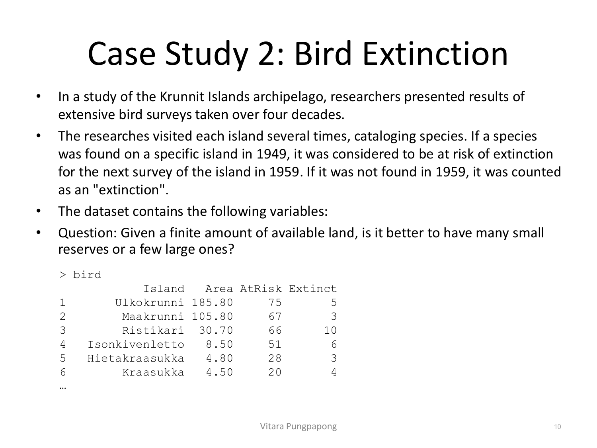
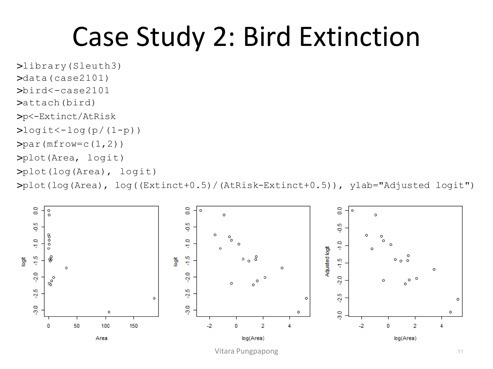
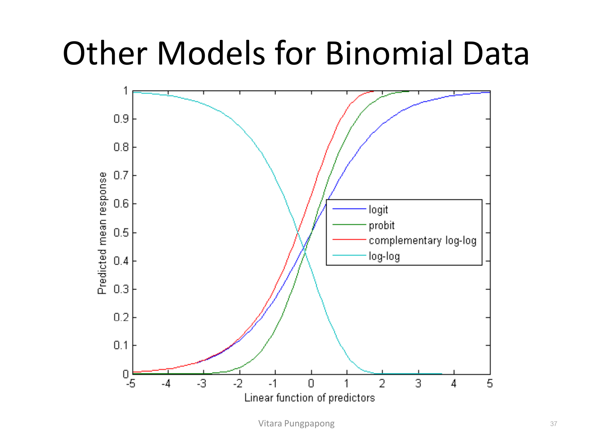

→ ฝึกกับโจทย์จริง: Moth Coloration (Assignment 7#2)
Lecture 10 — Binomial Counts
Lecture 9 สอน logistic regression บนข้อมูล binary (Y=0/1 ต่อหนึ่งหน่วยสังเกต) บทนี้ขยายไปยังกรณีที่ข้อมูลถูกรวมกลุ่ม (aggregate) ไว้แล้ว — แต่ละแถวไม่ใช่คนคนเดียว แต่เป็น "จำนวนสำเร็จจาก n ครั้งลอง" เช่น จำนวน O-ring ที่เสียหายจาก 6 วง หรือจำนวนนกที่สูญพันธุ์จากทั้งหมดที่เสี่ยง — สิ่งที่เปลี่ยนคือรูปแบบข้อมูลและ syntax ใน R (ต้องบอก R ว่า "สำเร็จกี่ครั้งจากกี่ครั้ง" ไม่ใช่แค่ Y เดียว) ส่วนสิ่งที่ไม่เปลี่ยนคือความหมายของสัมประสิทธิ์ (ยังคือ log-odds ต่อหนึ่งหน่วย X เหมือนเดิม) บทนี้ยังเพิ่มการเช็ค assumption ใหม่ที่ไม่มีในข้อมูล binary — overdispersion — ซึ่งเป็นการเช็ค assumption ที่ออกสอบเป็นรูปธรรมที่สุดของบทนี้
สไลด์แบ่ง response variable ของ logistic-regression family เป็น 2 แบบ: (1) Binary — Y coding เป็น 0/1 ต่อหนึ่งหน่วยสังเกต (Lecture 9) และ (2) Binomial counts — จำนวนความสำเร็จ (successes) จาก n ครั้งลอง (trials) ต่อหนึ่งกลุ่ม เช่น "จำนวนสำเร็จใน 10 ครั้งลอง" ทั้งสองแบบมาจากตระกูลการแจกแจงเดียวกัน:
สังเกตว่า binary คือกรณีพิเศษเมื่อ \(n=1\) ทุกแถว (\(Y \sim \text{Bernoulli}(\pi)\) ตามที่ Lecture 9 ใช้) ส่วนบทนี้คือกรณีทั่วไปที่ \(n\) ต่างกันได้ในแต่ละแถว (แต่ละกลุ่มอาจมีจำนวนครั้งลองไม่เท่ากัน) — โครงสร้างทางทฤษฎีของ mean/variance เหมือนกันทุกประการ เพียงแต่ตอนนี้ \(n\) ไม่ได้ล็อกไว้ที่ 1 เสมอ
ยานอวกาศ Challenger ระเบิดในปี 1986 สาเหตุเชื่อมโยงกับความล้มเหลวของ O-ring ในเครื่องยนต์จรวด — มีการเก็บข้อมูลจาก 23 ภารกิจก่อนหน้า แต่ละภารกิจมี booster 2 ตัว ตัวละ 3 O-ring รวม 6 O-ring ต่อภารกิจ และวัด "จำนวน O-ring ที่เสียหาย" พร้อมอุณหภูมิขณะปล่อยยาน — อุณหภูมิวันที่ยานระเบิดคือ 31°F ซึ่งเป็นตัวเลขสำคัญที่จะกลับมาใช้ตอบคำถามตั้งต้นของ case study นี้ในหัวข้อ 8: "ทำนายความล้มเหลวได้หรือไม่":
อ่านจุดข้อมูลในกราฟ: ที่อุณหภูมิต่ำสุดในข้อมูล (ประมาณ 53°F) มี O-ring เสียหายถึง 5 จาก 6 วง ขณะที่ภารกิจส่วนใหญ่ที่ปล่อยตอนอากาศอุ่น (65–80°F) แทบไม่มีความเสียหายเลย (damage=0) — เห็นแนวโน้มคร่าว ๆ แล้วว่ายิ่งอุณหภูมิต่ำ ยิ่งมีโอกาสเสียหายมากขึ้น แต่ช่วงข้อมูลจริงที่ใช้ฟิตโมเดลอยู่ประมาณ 53–81°F เท่านั้น — สังเกตว่า 31°F (อุณหภูมิวันเกิดเหตุ) อยู่นอกช่วงข้อมูลทั้งหมด ต่ำกว่าจุดที่หนาวที่สุดที่เคยสังเกตมาถึง 22°F ซึ่งเป็นประเด็น extrapolation ที่ต้องระวัง (เหมือนที่เตือนไว้ตั้งแต่ Lesson 1 หัวข้อ 7) แต่ก็ยังเป็นคำถามที่ต้องตอบเพราะเป็นข้อมูลจริงที่เกิดขึ้น
ตั้งโมเดล: ให้ \(Y_i\) = จำนวน O-ring ที่เสียหายในภารกิจที่ i และ \(X_i\) = อุณหภูมิขณะปล่อยยานของภารกิจที่ i เพราะแต่ละภารกิจมี 6 O-ring ที่อาจเสียหายหรือไม่เสียหายอย่างเป็นอิสระ(โดยประมาณ)กัน จึงมองว่า \(Y_i\) เป็น binomial count ได้อย่างธรรมชาติ:
cbind(successes, failures) — ทักษะที่ 1เหมือน Lecture 9, ฟิตด้วย glm(): glm(formula, data, family=binomial, subset, weights, ...) — family=binomial ใช้ link เริ่มต้นเป็น logit เหมือนเดิมทุกประการ สิ่งที่ต่างคือวิธีระบุ ตัวแปรตอบสนอง (response) ใน formula:
สิ่งที่เปลี่ยนระหว่าง Binary กับ Binomial Counts:
Binary (n_i=1 ทุกแถว, Lecture 9): ระบุ response ตรง ๆ เป็น \(Y_i\) เช่น glm(Survived ~ Age+Sex, data=donner, family=binomial)
Binomial counts (n_i อาจมากกว่า 1): ต้องระบุ response เป็น cbind(Y_i, n_i − Y_i) คือคู่ (จำนวนสำเร็จ, จำนวนไม่สำเร็จ) ไม่ใช่ Y ตัวเดียว เพราะ R ต้องรู้ทั้ง "สำเร็จกี่ครั้ง" และ "n มีกี่ครั้ง" เพื่อคำนวณ likelihood ของ Binomial ให้ถูก
สำหรับ O-rings: \(Y_i\) = damage (จำนวนเสียหาย), \(n_i - Y_i\) = 6 − damage (จำนวนไม่เสียหาย):
model<-glm(cbind(damage,6-damage)~temp,
data=orings,family=binomial)อีกวิธีที่ให้ผลฟิตเหมือนกันทุกประการ (โดยใช้ argument weights ที่ระบุไว้ในลิสต์ argument ของ glm() อยู่แล้ว) คือเขียน response เป็นสัดส่วน \(Y_i/n_i\) แล้วบอกน้ำหนักแต่ละแถวด้วย \(n_i\): glm(damage/6 ~ temp, weights=rep(6,23), family=binomial) — สไลด์นี้สาธิตแบบ cbind() เป็นหลักเพราะอ่านตรงไปตรงมากว่า (เห็นทั้งสำเร็จและไม่สำเร็จในสมการเดียว) แต่ทั้งสองแบบให้ β̂ และ SE เหมือนกันเป๊ะ เพราะเป็นการเขียน likelihood แบบเดียวกันคนละรูปแบบเท่านั้น
ผลลัพธ์จริงจาก summary(model):
Call:
glm(formula = cbind(damage, 6 - damage) ~ temp, family = binomial,
data = orings)
Deviance Residuals:
Min 1Q Median 3Q Max
-0.9529 -0.7345 -0.4393 -0.2079 1.9565
Coefficients:
Estimate Std. Error z value Pr(>|z|)
(Intercept) 11.66299 3.29626 3.538 0.000403 ***
temp -0.21623 0.05318 -4.066 4.78e-05 ***
---
Signif. codes: 0 '***' 0.001 '**' 0.01 '*' 0.05 '.' 0.1 ' ' 1
(Dispersion parameter for binomial family taken to be 1)
Null deviance: 38.898 on 22 degrees of freedom
Residual deviance: 16.912 on 21 degrees of freedom
AIC: 33.675
Number of Fisher Scoring iterations: 6อ่าน output: \(\hat{\beta}_0 = 11.663\), \(\hat{\beta}_1 = -0.216\) (ทดสอบด้วย z value ไม่ใช่ t value เหมือน lm() — เพราะ GLM ใช้ MLE ที่มี sampling distribution เป็น normal โดยประมาณ ไม่ใช่ t-distribution แบบ exact ของ OLS) \(\Pr(>|z|)\) ของ temp คือ 4.78e-05 (มีนัยสำคัญมาก) — สมการที่ได้คือ \(\log(\hat{\pi}/(1-\hat{\pi})) = 11.663 - 0.216 \times \text{temp}\) คอลัมน์ (Dispersion parameter for binomial family taken to be 1) คือค่าตั้งต้นที่ยังไม่ได้เช็ค overdispersion — จะกลับมาเช็คจริงในหัวข้อ 9
glm() ที่ถูกต้องด้วย cbind()โมเดล: \(Y_i \sim \text{Binomial}(20, \pi_i)\), \(\log(\pi_i/(1-\pi_i)) = \beta_0 + \beta_1 \, \text{dose}_i\) สำหรับ i = 1,…,40 (แต่ละกลุ่มมี n_i=20 คนคงที่)
โค้ด R: model <- glm(cbind(recovered, 20-recovered) ~ dose, data=data, family=binomial)
(หรือเทียบเท่ากันด้วย weights: glm(recovered/20 ~ dose, weights=rep(20,40), family=binomial))
ข่าวดี: ความหมายของสัมประสิทธิ์ไม่เปลี่ยนเลย เมื่อเทียบกับ Lecture 9 — เพราะ \(\beta\) ยังคุมความสัมพันธ์ระหว่าง \(X\) กับ log-odds ของ \(\pi\) ตัวเดียวกัน ไม่ว่าจะมาจากข้อมูล binary (n=1) หรือ binomial count (n>1) การแปลผล 3 ระดับที่ใช้ตลอดตระกูล logistic regression ยังใช้ได้เหมือนเดิม:
1. Log-odds scale (ตรงจากสัมประสิทธิ์): "เมื่อ X เพิ่มขึ้น 1 หน่วย log-odds ของความสำเร็จเปลี่ยนไป β̂₁ หน่วย (คุมตัวแปรอื่นให้คงที่)" — ตีความยากในทางปฏิบัติ มักใช้แค่เป็นขั้นกลาง
2. Odds ratio scale (ที่นิยมใช้ตอบข้อสอบที่สุด): "odds คูณด้วย \(e^{\hat{\beta}_1}\) ทุก ๆ 1 หน่วยที่ X เพิ่มขึ้น" — สำหรับ temp: \(e^{-0.21623} \approx 0.8056\) แปลว่า ทุก 1°F ที่อุณหภูมิเพิ่มขึ้น odds ของการเสียหายลดลงเหลือ 80.56% ของเดิม (ลดลงประมาณ 19.4%)
3. Probability scale (ตอบคำถามเชิงปฏิบัติ): คำนวณ π̂ ตรง ๆ ที่ X ค่าใดค่าหนึ่งด้วย \(\hat{\pi} = e^{\hat{\eta}}/(1+e^{\hat{\eta}})\) เมื่อ \(\hat{\eta} = \hat{\beta}_0+\hat{\beta}_1 X\) — จะใช้จริงในหัวข้อ 8
ขยายผลด้วยตัวเลขจริง: เทียบอุณหภูมิ 31°F (วันเกิดเหตุ) กับ 70°F (ใกล้ค่าเฉลี่ยของข้อมูล) — สูตร odds ratio ระหว่างสองจุด \(\omega_A/\omega_B = e^{\beta_1(A-B)}\) จาก Lecture 9 หัวข้อ interpretation ยังใช้ได้เป๊ะ: \(e^{-0.21623\times(31-70)} = e^{8.433} \approx 4{,}600\) — odds ของการเสียหายที่ 31°F สูงกว่าที่ 70°F ถึงประมาณ 4,600 เท่า เป็นตัวเลขที่ชัดเจนว่าโมเดลบ่งชี้ความเสี่ยงมหาศาลที่อุณหภูมินั้น (แม้จะเป็นการ extrapolate ไกลจากช่วงข้อมูลตามที่เตือนไว้ในหัวข้อ 2 ก็ตาม — extrapolate ไกลแบบนี้ ตัวเลขจึงควรตีความเป็น "สัญญาณเตือนที่ชัดเจน" มากกว่า "ตัวเลขแม่นยำ")
สิ่งที่เปลี่ยนจริง ๆ ระหว่าง binary กับ binomial-count logistic regression มีแค่ 2 อย่าง: (1) รูปแบบข้อมูล — ต้องมีทั้งจำนวนสำเร็จและจำนวนครั้งลองต่อแถว ไม่ใช่แค่ 0/1 ต่อแถว และ (2) syntax ใน R — ต้องใช้ cbind(Y, n−Y) หรือ y/n ~ x พร้อม weights=n แทนที่จะระบุ Y ตรง ๆ — ไม่มีอะไรเปลี่ยนในทฤษฎีเบื้องหลังหรือวิธีตีความสัมประสิทธิ์เลย
Log-odds scale: "เมื่ออุณหภูมิ (temp) เพิ่มขึ้น 1°F log-odds ของความน่าจะเป็นที่ O-ring จะเสียหายลดลง 0.21623 หน่วย โดยเฉลี่ย"
Odds ratio scale (คำตอบที่ครบสมบูรณ์กว่า): "เมื่ออุณหภูมิเพิ่มขึ้น 1°F odds ของการเสียหายคูณด้วย e^(−0.21623) ≈ 0.8056 กล่าวคือลดลงเหลือประมาณ 80.6% ของเดิม (ลดลง ~19.4%) — และเพราะสัมประสิทธิ์เป็นลบและ p-value = 4.78e-05 น้อยกว่า 0.05 มาก จึงสรุปว่าอุณหภูมิที่สูงขึ้นสัมพันธ์กับโอกาสเสียหายที่ลดลงอย่างมีนัยสำคัญทางสถิติ"
โจทย์ที่สอง: ในหมู่เกาะ Krunnit มีการสำรวจนกซ้ำ ๆ ตลอด 4 ทศวรรษ — ถ้าเจอสปีชีส์บนเกาะในปี 1949 นับว่า "at risk" สำหรับการสำรวจครั้งถัดไปปี 1959 ถ้าไม่เจอในปี 1959 นับว่า "extinct" คำถาม: พื้นที่อนุรักษ์ขนาดเล็กหลายที่ ดีกว่าหรือแย่กว่าพื้นที่ขนาดใหญ่ที่เดียว ในแง่การป้องกันการสูญพันธุ์:

อ่านแถวแรก: เกาะ Ulkokrunni มีพื้นที่ 185.80 ตร.กม. (เกาะใหญ่ที่สุดในตัวอย่างนี้) มีสปีชีส์เสี่ยง 75 ชนิด สูญพันธุ์ไป 5 ชนิด คิดเป็นสัดส่วน 5/75 ≈ 6.7% เทียบกับเกาะ Kraasukka ที่เล็กกว่ามาก (4.50 ตร.กม.) มีสปีชีส์เสี่ยง 20 ชนิด สูญพันธุ์ไป 4 ชนิด คิดเป็นสัดส่วน 4/20 = 20% — เห็นแนวโน้มคร่าว ๆ แล้วว่าเกาะเล็กมีสัดส่วนสูญพันธุ์สูงกว่าเกาะใหญ่ ซึ่งเป็นข้อมูลดิบที่จะยืนยันด้วยโมเดลต่อไป โดยที่นี่ \(n_i = \text{AtRisk}_i\) (จำนวนครั้งลองต่อเกาะไม่เท่ากัน ต่างจาก O-rings ที่ n=6 คงที่ทุกภารกิจ)
ก่อนฟิตโมเดล สไลด์ตรวจสอบความสัมพันธ์ระหว่าง sample logit กับตัวแปรอิสระด้วยตาก่อน (เหมือนหลักการ "plot ก่อนเสมอ" จาก Lesson 1) — แต่ปัญหาคือ sample logit \(\log(y_i/(n_i-y_i))\) ไม่นิยามเมื่อ \(y_i=0\) หรือ \(y_i=n_i\) (log(0) หรือหารด้วย 0) Haldane (1956) จึงเสนอตัวปรับแก้:
บวก 0.5 เข้าไปทั้งเศษและส่วนก่อนหา log แก้ปัญหา log(0)/หารศูนย์ และให้ตัวประมาณที่มี bias เล็กน้อยเท่านั้น — กราฟของ η̂_i เทียบกับ X ควรจะเป็นเส้นตรงคร่าว ๆ ถ้าโมเดล logistic เหมาะสมกับข้อมูล นี่คือหลักการเดียวกับ "ต้อง plot ก่อนฟิต" ที่ Lesson 1 เน้นย้ำ เพียงแค่เปลี่ยนจาก scatter plot ธรรมดาเป็น logit-scale plot:

เทียบ 3 กราฟ: กราฟซ้าย (logit เทียบกับ Area ดิบ) จุดข้อมูลกระจุกตัวอยู่ใกล้ 0 แล้วมีจุดเดียวที่ Area≈185 (เกาะ Ulkokrunni) ยื่นออกไปไกล — ไม่เห็นแนวโน้มเส้นตรงชัดเจน กราฟกลาง (logit เทียบกับ \(\log(\text{Area})\)) จุดข้อมูลกระจายเป็นเส้นตรงลาดลงชัดเจนกว่ามาก และกราฟขวา (adjusted logit ตามสูตร Haldane เทียบกับ \(\log(\text{Area})\)) ให้รูปแบบเดียวกับกราฟกลางแทบไม่ต่าง — สรุปได้ว่า \(\log(\text{Area})\) เป็นตัวแปรอิสระที่เหมาะสมกว่า \(\text{Area}\) ดิบ เพราะทำให้ความสัมพันธ์กับ logit เป็นเส้นตรงมากขึ้น (พื้นที่เกาะมีสเกลกว้างมาก ตั้งแต่ 4.5 ถึง 185.8 ตร.กม. การ log จึงบีบสเกลให้ใช้งานได้ดีขึ้น)
ฟิตโมเดลด้วย \(\log(\text{Area})\):
birdmodel<-glm(cbind(Extinct, AtRisk-Extinct)~log(Area), data=bird,
family=binomial)Call:
glm(formula = cbind(Extinct, AtRisk - Extinct) ~ log(Area), family = binomial,
data = bird)
Coefficients:
Estimate Std. Error z value Pr(>|z|)
(Intercept) -1.19620 0.11845 -10.099 < 2e-16 ***
log(Area) -0.29710 0.05485 -5.416 6.08e-08 ***
---
Signif. codes: 0 '***' 0.001 '**' 0.01 '*' 0.05 '.' 0.1 ' ' 1
(Dispersion parameter for binomial family taken to be 1)
Null deviance: 45.338 on 17 degrees of freedom
Residual deviance: 12.062 on 16 degrees of freedom
AIC: 75.394
Number of Fisher Scoring iterations: 4สมการที่ได้: \(\log(\hat{\pi}/(1-\hat{\pi})) = -1.196 - 0.297 \times \log(\text{Area})\)
เมื่อตัวแปรอิสระเป็น \(\log(X)\) การแปลผล odds ratio เปลี่ยนรูปแบบเล็กน้อยจาก template ปกติในหัวข้อ 4 — ต้องใช้กฎ "k-fold increase":
ใช้กับ \(\hat{\beta}_1 = -0.29710\): ถ้าเกาะมีพื้นที่เพิ่มขึ้นเป็น 2 เท่า (k=2) odds ของการสูญพันธุ์จะเปลี่ยนไปด้วยตัวคูณ \(2^{-0.29710} \approx 0.8139\) — odds ของการสูญพันธุ์ลดลงเหลือประมาณ 81.4% ของเดิม (ลดลง ~18.6%) เมื่อพื้นที่เกาะเพิ่มเป็นสองเท่า — ยืนยันสมมติฐานจากข้อมูลดิบก่อนหน้านี้ว่าเกาะใหญ่กว่ามีความเสี่ยงสูญพันธุ์ต่ำกว่า ตอบคำถามตั้งต้นของ case study ได้บางส่วนแล้วว่า "พื้นที่ใหญ่ต่อเนื่อง" ดูจะช่วยลดอัตราสูญพันธุ์ต่อสปีชีส์ได้จริง
สไลด์แจงประเภทของการทดสอบใน logistic regression ไว้ 3 แบบ: (1) goodness-of-fit test (2) hypothesis test สำหรับสัมประสิทธิ์เดี่ยว และ (3) เปรียบเทียบโมเดลที่ซ้อนกัน (nested models) — เริ่มจากข้อแรก ซึ่งเป็นการเช็ค assumption ที่ตรงไปตรงมาที่สุดสำหรับ binomial GLM (คู่ขนานกับการเช็ค residual plot ใน OLS)
ถ้า \(Y_i\) เป็น binomial จริง และ \(n_i\) มีค่ามากพอ (ทุก \(n_i \ge 5\)) ค่า deviance ของโมเดลจะมีการแจกแจงประมาณ \(\chi^2\) ด้วย \(df = n - (p+1)\) — ใช้ทดสอบว่าโมเดลปัจจุบัน "fit เพียงพอ" หรือไม่ (ค่า deviance สูงผิดปกติเทียบกับ df แปลว่า fit ไม่ดี):
> model<-glm(cbind(damage,6-damage)~temp,data=orings,family=binomial)
> pchisq(deviance(model), df.residual(model), lower=FALSE)
[1] 0.7164099อ่านผล: p-value = 0.7164 มากกว่า 0.05 มาก จึงสรุปว่าโมเดลนี้ fit ข้อมูลได้เพียงพอ (ไม่มีหลักฐานปฏิเสธ) — แต่สไลด์เตือนไว้ชัดเจนว่า ผลนี้ไม่ได้แปลว่าโมเดลถูกต้อง หรือไม่มีโมเดลที่ง่ายกว่านี้ที่ fit ได้ดีเท่ากัน การไม่ปฏิเสธ H₀ ไม่ได้พิสูจน์ความถูกต้องของโมเดล เป็นแค่การไม่มีหลักฐานคัดค้าน — เมื่อ \(n_i\) มีค่าน้อย (การประมาณ χ² ไม่แม่นยำ) แนะนำให้ใช้ Hosmer-Lemeshow test แทน
pchisq(deviance(model), df.residual(model), lower=FALSE) = 0.7164 ของโมเดล O-rings ข้อสรุปใดถูกต้องที่สุด?สำหรับทดสอบ \(H_0: \beta_k = 0\) มี 2 วิธีหลัก:
1. Wald's Test — ใช้คุณสมบัติของ MLE ว่า β̂_k มีการแจกแจงประมาณปกติ:
\[z = (\hat{\beta}_k - \beta_k) / SE[\hat{\beta}_k] \sim N(0,1)\]2. Likelihood Ratio Test (LRT) หรือ "drop-in-deviance test" — เปรียบเทียบ deviance ของโมเดล reduced (H₀) กับ full (H₁):
\(LRT = D(\hat{\beta}_0) - D(\hat{\beta}) \sim \chi^2_{df}\) โดย \(df\) = จำนวนพารามิเตอร์ที่ต่างกันระหว่างสองโมเดลในทางปฏิบัติซอฟต์แวร์มักไม่รายงาน log-likelihood ตรง ๆ แต่รายงาน deviance แทน (deviance คือ −2×log-likelihood บวกค่าคงที่) จึงคำนวณ LRT จากผลต่างของ deviance ได้เลย ไม่ต้องดึง log-likelihood ออกมาเอง
ตัวอย่าง O-rings: โมเดลเต็ม (มี temp) เทียบกับโมเดลลดรูป (มีแค่ intercept):
> reducedmodel<-glm(cbind(damage,6-damage)~1, data=orings,family=binomial)
> summary(reducedmodel)
...
Coefficients:
Estimate Std. Error z value Pr(>|z|)
(Intercept) -2.4463 0.3143 -7.783 7.06e-15 ***
...
Null deviance: 38.898 on 22 degrees of freedom
Residual deviance: 38.898 on 22 degrees of freedom
AIC: 53.66สังเกต: โมเดลลดรูป (intercept-only) มี \(\text{Null deviance} = \text{Residual deviance} = 38.898\) พอดี — สมเหตุสมผลเพราะไม่มี predictor ให้อธิบายอะไรเพิ่ม deviance ของมันจึงเท่ากับ deviance ตอนไม่มีโมเดลเลย เทียบกับโมเดลเต็มที่มี Residual deviance = 16.912:
> anova(reducedmodel, model, test="LRT")
Analysis of Deviance Table
Model 1: cbind(damage, 6 - damage) ~ 1
Model 2: cbind(damage, 6 - damage) ~ temp
Resid. Df Resid. Dev Df Deviance Pr(>Chi)
1 22 38.898
2 21 16.912 1 21.985 2.747e-06 ***คำนวณตรวจสอบ: \(LRT = 38.898 - 16.912 = 21.985\) ตรงกับคอลัมน์ Deviance เป๊ะ, \(df = 22-21 = 1\) (ต่างกัน 1 พารามิเตอร์คือ temp), p-value = 2.747e-06 เล็กกว่า Wald's test p-value (4.78e-05) จากหัวข้อ 3 ด้วยซ้ำ — ทั้งสองวิธีให้ข้อสรุปเดียวกัน (ปฏิเสธ H₀: β_temp=0 อย่างชัดเจน) แต่ตัวเลข p-value ไม่เท่ากันเป๊ะเหมือนกรณี t²=F ใน SLR เพราะ Wald's test กับ LRT เป็นการประมาณ asymptotic คนละแบบ — สไลด์ระบุว่า ถ้าโจทย์ต้องการทดสอบหลายสัมประสิทธิ์พร้อมกัน LRT เป็นทางเลือกเดียวที่ใช้ได้จริง ส่วนถ้าทดสอบสัมประสิทธิ์เดี่ยว ใช้ได้ทั้งคู่ แต่ LRT ให้ p-value ที่แม่นยำกว่าโดยทั่วไป ขณะที่ Wald's test คำนวณง่ายกว่าและมักเพียงพอเมื่อ p-value ชัดเจนมากหรือน้อยมากอยู่แล้ว
สร้าง CI ของ \(\eta(x) = x\beta\) บน link scale ก่อน (เพราะบน scale นี้ β̂ มีการแจกแจงปกติโดยประมาณ) แล้วค่อยแปลงกลับเป็น π ด้วย inverse-logit — ห้ามสร้าง CI ของ π ตรง ๆ เพราะ π ถูกบีบอยู่ในช่วง (0,1) การแจกแจงจึงไม่สมมาตรแบบปกติ:
ตอนนี้กลับมาตอบคำถามตั้งต้นของ case study ได้แล้ว: "ทำนายความล้มเหลวที่ 31°F ได้หรือไม่" — คำนวณ π̂ ที่ temp=31 พร้อม 95% CI:
> plink<-predict(model, newdata=data.frame(temp=31), se.fit=T,
+ type="link")
> plink$fit
1
4.959746
> plink$se.fit
[1] 1.66731
> # 95% CI for eta
> CIeta<-c(plink$fit-1.96*plink$se.fit, plink$fit+1.96*plink$se.fit)
> CIeta
1 1
1.691818 8.227674
> # 95% CI for pi
> CIprob<-exp(CIeta)/(1+exp(CIeta))
> CIprob
1 1
0.8444631 0.9997329
> CIcounts<-6*CIprob # CI for mean number of damaged O-rings
> CIcounts
1 1
5.066779 5.998397ตรวจสอบเลขที่มา: \(\hat{\eta} = 11.66299 - 0.21623 \times 31 = 4.9597\) ตรงกับ plink$fit เป๊ะ — 95% CI ของความน่าจะเป็นที่ O-ring จะเสียหายที่ 31°F คือ (0.844, 0.9997) กล่าวคือมั่นใจ 95% ว่าโอกาสเสียหายของ O-ring แต่ละวงอยู่ระหว่าง 84.4% ถึง 99.97% — เมื่อแปลงเป็นจำนวน O-ring ที่คาดว่าจะเสียหายจากทั้งหมด 6 วง ได้ช่วง (5.07, 6.00) นั่นคือโมเดลทำนายว่าแทบทุก O-ring (5 ถึง 6 จาก 6 วง) น่าจะเสียหายที่อุณหภูมิ 31°F — คำตอบต่อคำถามตั้งต้น "ทำนายได้หรือไม่": ได้ — โมเดลนี้ (ถ้าฟิตไว้ก่อนการปล่อยยาน) จะเตือนได้ชัดเจนว่าความเสี่ยงสูงมากที่อุณหภูมินี้ แม้จะเป็นการ extrapolate ไกลจากช่วงข้อมูลจริง (53–81°F) ตามที่เตือนไว้ในหัวข้อ 2 ก็ตาม — นี่คือเหตุผลที่ case study นี้ถูกใช้สอนเรื่อง logistic regression บ่อยครั้งในวงการสถิติ
Assumption ของ binomial คือ \(\text{Var}[Y_i] = n_i\pi_i(1-\pi_i)\) พอดี — แต่ถ้าการลองแต่ละครั้งใน trial เดียวกันไม่ได้เป็นอิสระต่อกันจริง (เช่น O-ring 6 วงในภารกิจเดียวกันอาจเสียหายพร้อมกันเพราะสาเหตุร่วม ไม่ใช่สุ่มอิสระ) หรือมีตัวแปรอิสระสำคัญที่ยังไม่ได้ใส่ในโมเดล variance ที่สังเกตได้จริงมักจะมากกว่าที่ทฤษฎี binomial ทำนายไว้ เรียกว่า overdispersion (ตรงข้ามคือ underdispersion ถ้า variance จริงน้อยกว่า):
ผลกระทบสำคัญที่ต้องจำ: เมื่อเกิด overdispersion/underdispersion ค่าประมาณ β̂ ยังไม่เอนเอียงมากนัก (ไม่ผิดพลาดร้ายแรง) แต่ SE[β̂] ที่โมเดล binomial มาตรฐานรายงานจะเล็กกว่าความเป็นจริง — ทำให้ z-test/Wald's test ดูมีนัยสำคัญเกินจริง (p-value เตี้ยเกินไป) นี่คือเหตุผลที่การเช็ค overdispersion เป็นขั้นตอน assumption-check ที่จำเป็นก่อนเชื่อ p-value จาก summary() ตรง ๆ
วิธีตรวจสอบ: ประมาณ dispersion parameter \(\phi\) ด้วย Pearson's \(X^2\):
est.phi<-function(glmobj)
{
sum(residuals(glmobj, type="pearson")^2)/df.residual(glmobj)
}
> est.phi(model)
[1] 1.336542กฎอย่างคร่าว: φ > 1.5 บ่งชี้ overdispersion, φ >> 2 บ่งชี้ overdispersion ที่รุนแรง — สำหรับโมเดล O-rings ได้ \(\hat{\phi} = 1.336542\) ซึ่งยังต่ำกว่าเกณฑ์ 1.5 จึงยังไม่ถือว่าเป็น overdispersion ที่รุนแรง (แม้จะมากกว่า 1 เล็กน้อย) — ส่วนโมเดล bird extinction ได้ \(\hat{\phi} = 0.732573\) (น้อยกว่า 1 คือ underdispersion เล็กน้อย) ก็ไม่ถือว่าผิดปกติรุนแรงเช่นกัน — ทั้งสองกรณีจึงเป็นตัวอย่างที่ดีว่า "φ̂ ≠ 1 พอดี" ไม่ได้แปลว่าต้องแก้ไขทันที ต้องดูเทียบกับเกณฑ์อย่างมีเหตุผล
วิธีจัดการ overdispersion คือ quasi-likelihood approach — เพิ่มพารามิเตอร์ dispersion เข้าไปใน variance function โดยตรง โดยไม่เปลี่ยนค่าประมาณ β̂ (เพราะ φ ไม่กระทบ E[Y_i]) แต่ปรับ SE[β̂] ให้ถูกต้องขึ้น:
ใน R เปลี่ยน family=binomial เป็น family=quasibinomial:
> qmodel<-glm(cbind(damage, 6-damage)~temp, family=quasibinomial,
data=orings)
> summary(qmodel)
...
Coefficients:
Estimate Std. Error t value Pr(>|t|)
(Intercept) 11.66299 3.81077 3.061 0.00594 **
temp -0.21623 0.06148 -3.517 0.00205 **
---
(Dispersion parameter for quasibinomial family taken to be 1.336542)
Null deviance: 38.898 on 22 degrees of freedom
Residual deviance: 16.912 on 21 degrees of freedom
AIC: NAเช็คความสัมพันธ์ของตัวเลข: \(\hat{\beta}\) (11.66299, −0.21623) เหมือนเดิมทุกประการ กับโมเดล binomial มาตรฐานในหัวข้อ 3 (ยืนยันว่า φ ไม่กระทบค่าประมาณ) แต่ \(SE\) ขยายขึ้นด้วยตัวคูณ \(\sqrt{\hat{\phi}} = \sqrt{1.336542} \approx 1.1561\) พอดี: \(0.05318 \times 1.1561 \approx 0.06148\) และ \(3.29626 \times 1.1561 \approx 3.8108\) ตรงกับค่าที่รายงานเป๊ะ — เพราะ SE ใหญ่ขึ้น สถิติทดสอบจึงเล็กลงตามสัดส่วน: \(t = z/\sqrt{\hat{\phi}} = -4.066/1.1561 \approx -3.518\) ใกล้เคียง \(t\text{ value} = -3.517\) ที่รายงาน — p-value ยังมีนัยสำคัญ (0.00205) แต่ไม่สุดโต่งเท่าตอนไม่ปรับ dispersion (4.78e-05) — นี่คือผลลัพธ์รูปธรรมของการ "ไม่เช็ค overdispersion แล้วได้ p-value ที่มั่นใจเกินจริง"
สำหรับการเปรียบเทียบโมเดล nested ภายใต้ overdispersion ใช้ F-test แทน χ²-test:
> redqmodel<-glm(cbind(damage, 6-damage)~1, family=quasibinomial, data=orings)
> anova(redqmodel, qmodel, test="F")
Analysis of Deviance Table
Model 1: cbind(damage, 6 - damage) ~ 1
Model 2: cbind(damage, 6 - damage) ~ temp
Resid. Df Resid. Dev Df Deviance F Pr(>F)
1 22 38.898
2 21 16.912 1 21.985 16.449 0.0005686 ***เทียบกับ LRT/χ² test ในหัวข้อ 7 (p=2.747e-06) — F-test ที่ปรับ dispersion แล้วให้ p-value ที่สูงขึ้น (0.0005686) แต่ก็ยังมีนัยสำคัญมาก — สรุปเหมือนกันว่า temp มีผลต่อการเสียหายจริง เพียงแต่ p-value ที่ปรับ overdispersion แล้วสะท้อนความไม่แน่นอนที่แท้จริงได้ดีกว่า
family=quasibinomial อะไรจะเปลี่ยนและอะไรจะไม่เปลี่ยนในผลลัพธ์Logit ไม่ใช่ link function เดียวที่ใช้กับ binomial data — สไลด์แนะนำอีก 2 แบบ:
Probit: link function \(\Phi^{-1}(\pi(x_i)) = x_i\beta\), inverse link \(\pi(x_i) = \Phi(x_i\beta)\) (Φ คือ CDF ของ standard normal) — R: glm(formula, data, family=binomial(link="probit"))
Complementary Log-Log (cloglog): link function \(\log\{-\log[1-\pi(x_i)]\} = x_i\beta\), inverse link \(\pi(x_i) = 1 - \exp\{-\exp(x_i\beta)\}\) — R: glm(formula, data, family=binomial(link="cloglog"))
ความต่างสำคัญ: logit และ probit มีรูปทรงสมมาตรรอบจุดที่ \(\pi(x)=0.5\) ส่วน cloglog เป็น link แบบไม่สมมาตร — π(x) เข้าใกล้ 0 ค่อนข้างช้า แต่เข้าใกล้ 1 อย่างรวดเร็ว:

อ่านกราฟ: เส้นสีน้ำเงิน (logit) กับเส้นสีเขียว (probit) เกือบทับกันตลอดช่วง โค้ง S สมมาตรรอบจุด (0, 0.5) พอดี — เห็นได้ว่าสองแบบนี้ให้ผลทำนายใกล้เคียงกันมากในทางปฏิบัติ (ต่างกันแค่การตีความสัมประสิทธิ์ทางคณิตศาสตร์ ไม่ต่างกันมากในแง่ π ที่ทำนายได้) ส่วนเส้นสีแดง (complementary log-log) ไต่จาก 0 ขึ้นไปถึง 1 อย่างรวดเร็วกว่าทางฝั่งขวา (ค่า X เป็นบวก) เทียบกับทางฝั่งซ้าย — ไม่สมมาตรรอบจุดกึ่งกลางเหมือนอีกสองเส้น เหมาะกับข้อมูลที่ความน่าจะเป็นเข้าใกล้ 1 เร็วกว่าเข้าใกล้ 0 (เช่น ข้อมูลความล้มเหลว/เวลารอดชีวิตบางประเภท) — การเลือก link function ที่เหมาะสมจึงควรพิจารณาจากรูปร่างของความสัมพันธ์จริงในข้อมูล ไม่ใช่ใช้ logit เป็นค่าตั้งต้นเสมอไปโดยไม่คิด
cbind(successes, failures) ~ x แทน Y ~ x ตรง ๆ, แปลผลสัมประสิทธิ์ได้ทั้ง log-odds/odds-ratio/probability scale พร้อมกฎพิเศษสำหรับตัวแปรที่ผ่าน log (k-fold rule), เช็ค goodness-of-fit ด้วย deviance-based χ² test, เลือกใช้ Wald's test หรือ LRT ได้ถูกสถานการณ์, สร้าง prediction interval บน link scale แล้วแปลงกลับเป็น probability ได้, และที่สำคัญที่สุดคือเช็ค overdispersion ด้วย φ̂ ก่อนเชื่อ p-value จาก summary() เสมอ — ทักษะทั้งหมดนี้จะขยายผลต่อใน Lecture 11 (Count Regression) ที่ overdispersion กลับมาเป็นประเด็นสำคัญอีกครั้งกับข้อมูลแบบนับจำนวน (Poisson)
ตารางนี้ไล่ทุกหน้าของ Lecture10.pdf ตั้งแต่หน้า 1 ถึง 37 — หน้าที่มี ✓ ถูกอธิบายและ/หรือใส่รูปในเนื้อหาข้างบนแล้ว ส่วนที่เหลือ (etc) เป็นหน้าปก/หน้าคั่นที่ไม่มีเนื้อหาทฤษฎีใหม่ให้ทำ quiz เพิ่ม
| หน้า | เนื้อหา | สถานะ |
|---|---|---|
| 1 | ปกเรื่อง "Lecture 10: Binomial Counts" | etc — ปก |
| 2 | Binomial Response Variables — นิยาม Y~Binomial(n,π), Mean/Var | ✓ หัวข้อ 1 |
| 3 | Case Study 1 divider — ภาพถ่ายการปล่อยยาน/การระเบิด | etc — ภาพเปิดเรื่อง ไม่มีเนื้อหาสถิติ |
| 4 | Challenger O-rings — โจทย์ + ข้อมูล + scatter plot | ✓ หัวข้อ 2 (มีรูป) |
| 5 | Challenger O-rings — ตั้งโมเดล Yi~Binomial(6,πi) + logit link | ✓ หัวข้อ 2 |
| 6 | Logistic Regression Models in R — args ของ glm() | ✓ หัวข้อ 3 |
| 7 | Logistic Regression Models in R — cbind() syntax + ตัวอย่าง orings | ✓ หัวข้อ 3 |
| 8 | Case Study 1 — summary(model) เต็ม | ✓ หัวข้อ 3 |
| 9 | Graphical Check — sample logit + Haldane adjustment | ✓ หัวข้อ 5 |
| 10 | Case Study 2: Bird Extinction — โจทย์ + ตารางข้อมูล | ✓ หัวข้อ 5 (มีรูป) |
| 11 | Case Study 2 — โค้ด R + plot logit เทียบ Area/log(Area) | ✓ หัวข้อ 5 (มีรูป) |
| 12 | Case Study 2 — birdmodel summary() เต็ม | ✓ หัวข้อ 5 |
| 13 | Interpretation ของสัมประสิทธิ์ตัวแปรที่ผ่าน log — กฎ k-fold | ✓ หัวข้อ 5 |
| 14 | Inference for Logistic Regression — รายการ 3 ประเภทการทดสอบ | ✓ หัวข้อ 6 (ภาพรวม) |
| 15 | Goodness-of-Fit Test — สูตร χ² + ตัวอย่าง orings | ✓ หัวข้อ 6 |
| 16 | Wald's Test — สูตร z | ✓ หัวข้อ 7 |
| 17 | Likelihood Ratio Test (LRT) — นิยาม + สูตรทั่วไป | ✓ หัวข้อ 7 |
| 18 | LRT (cont.) — เขียนในรูป deviance D(.) | ✓ หัวข้อ 7 |
| 19 | Case Study 1 — summary(model) ซ้ำ (เชื่อมกับ Wald's test) | ✓ หัวข้อ 7 (ผลซ้ำจาก p.8) |
| 20 | Case Study 1 — reducedmodel summary() (intercept-only) | ✓ หัวข้อ 7 |
| 21 | Case Study 1 — anova(reducedmodel, model, test="LRT"/"Chisq") | ✓ หัวข้อ 7 |
| 22 | Comparing Nested Models — สูตร LRT ทั่วไป | ✓ หัวข้อ 7 |
| 23 | Wald's Test or LRT — คำแนะนำการเลือกใช้ | ✓ หัวข้อ 7 |
| 24 | Prediction at New Data x — สูตร CI ของ η และ π | ✓ หัวข้อ 8 |
| 25 | Case Study 1 — โค้ด predict() + CI ของ π ที่ temp=31 | ✓ หัวข้อ 8 |
| 26 | Overdispersion — นิยาม overdispersion/underdispersion | ✓ หัวข้อ 9 |
| 27 | Overdispersion — สาเหตุที่เป็นไปได้ + คำถามที่ควรถาม | ✓ หัวข้อ 9 |
| 28 | Quasi-likelihood Approach — สูตร φ̂ + ฟังก์ชัน est.phi() | ✓ หัวข้อ 9 |
| 29 | Quasi-likelihood Approach — เกณฑ์ φ (1.5, 2) | ✓ หัวข้อ 9 |
| 30 | Quasi-likelihood Approach — Mean/Var เมื่อรวม φ | ✓ หัวข้อ 9 |
| 31 | Quasi-likelihood Approach — IWLS/t-distribution/สูตรทดสอบ | ✓ หัวข้อ 9 |
| 32 | Quasi-likelihood Approach — qmodel summary() (orings) | ✓ หัวข้อ 9 |
| 33 | Quasi-likelihood Approach — birdquasimodel summary() | ✓ หัวข้อ 9 (อ้างอิงค่า φ̂) |
| 34 | LRT when Extra-Binomial is Presented — สูตร F-test | ✓ หัวข้อ 9 |
| 35 | Case Study 1 — anova(redqmodel, qmodel, test="F") | ✓ หัวข้อ 9 |
| 36 | Other Models for Binomial Data — Probit/Complementary Log-Log นิยาม | ✓ หัวข้อ 10 |
| 37 | Other Models for Binomial Data — กราฟเปรียบเทียบ link function | ✓ หัวข้อ 10 (มีรูป) |
สงสัยตรงไหน ถามได้เลยในแชท — ผมเป็นผู้สอนของคุณ ถามซ้ำได้ ถามลึกได้ ไม่ต้องเกรงใจ